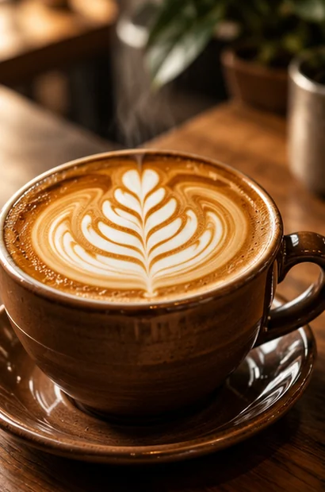
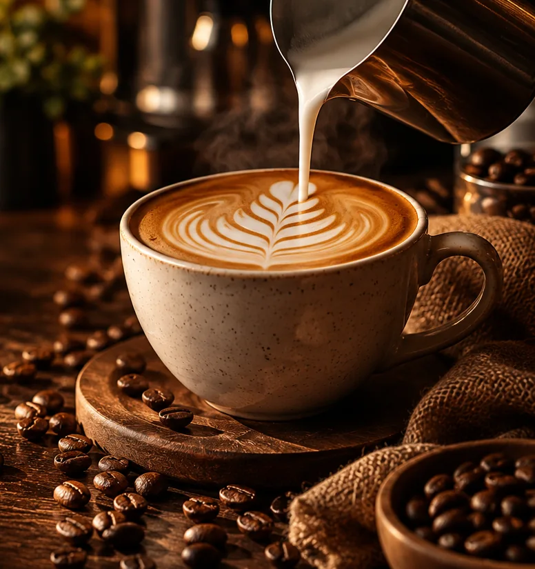
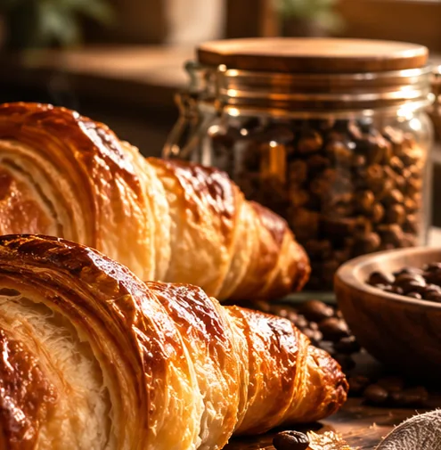
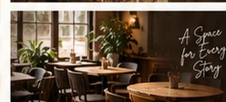

QueridinhoLatte clássico
Espresso intenso, leite cremoso e um toque de aconchego.
R$ 15,90
Cafés feitos para sentir
Cada xícara tem uma história. Descubra sabores especiais, preparos artesanais e aquele momento do dia que é só seu.
Nossa essência
A Aurora nasceu de uma ideia simples: transformar pequenos intervalos em grandes momentos. Acreditamos que um bom café vai além do sabor.
É sobre conversas sem pressa, encontros inesperados e o cuidado que existe em cada detalhe — do grão à xícara.
Descubra o que nos move


O cuidado faz a diferença
Sabores especiais e atenção à qualidade em cada preparo.
Cuidado no tempo, na técnica e nos pequenos detalhes.
Um lugar imaginado para conversas e boas lembranças.
Uma pausa sem pressa para aproveitar o agora.
Um olhar sobre a Aurora
Um pouco da atmosfera que inspira a nossa cafeteria.
Até a próxima xícara
Explore o cardápio e monte uma seleção de demonstração.